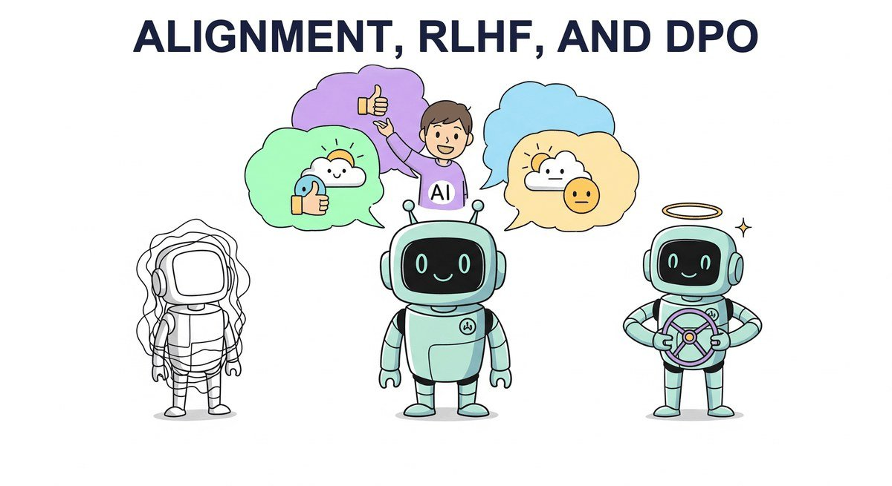

"The question of machine intelligence is not whether machines can think, but whether machines can be taught to care about the right things."
Reward, Philosophically Wired AI Agent
Fine-tuning (Chapter 18) and PEFT (Chapter 19) teach a model new capabilities. Alignment teaches it new preferences. RLHF, DPO, IPO, KTO, ORPO, this chapter is the alignment buffet: how preference data is collected, how the algorithms differ, and which one you reach for depending on your data and compute budget.
Chapter Overview
GPT-3 in 2020 could write a passable essay. GPT-3 also cheerfully wrote phishing emails, racial slurs, and instructions for synthesizing nerve agents. The most visible difference between that GPT-3 and the ChatGPT that broke the internet two years later was alignment (RLHF on top of additional instruction tuning), though instruction tuning and continued pretraining contributed too. RLHF, Constitutional AI, and the DPO family of methods turned raw next-token predictors into assistants that usually decline to help with the nerve agents and politely answer the essay question; jailbreak research (Chapter 47) shows the refusals are a strong default rather than a guarantee. This chapter covers how that transformation actually works and which algorithm to reach for in 2026.
This chapter covers the full landscape of preference-based alignment methods. It begins with RLHF, the technique that powered ChatGPT's breakthrough, walking through the three-stage pipeline of supervised fine-tuning, reward modeling, and proximal policy optimization. It then explores modern alternatives like Direct Preference Optimization (DPO) that eliminate the need for a separate reward model, Constitutional AI for scalable self-alignment, and Reinforcement Learning with Verifiable Rewards (RLVR) for training reasoning capabilities. These techniques build on the parameter-efficient methods covered earlier and connect directly to the production safety considerations explored later in the book.
By the end of this chapter, you will understand the theoretical foundations and practical engineering of each alignment family, know when to choose one method over another, and be able to implement preference tuning pipelines using current open-source tooling.
Alignment is what separates a raw language model from a helpful, harmless assistant. This chapter covers RLHF, DPO, and constitutional AI, the techniques that shaped models like ChatGPT and Claude. Understanding alignment is essential for the safety discussions in Chapter 37 and for anyone building user-facing AI systems.
- Explain the three-stage RLHF pipeline (SFT, reward model training, PPO) and the role of each component
- Describe how the Bradley-Terry preference model converts pairwise comparisons into a scalar reward signal
- Derive the DPO objective from the RLHF formulation and explain why it eliminates the reward model
- Compare DPO, KTO, ORPO, SimPO, and IPO in terms of data requirements, training stability, and performance
- Implement preference tuning pipelines using TRL, building on PEFT techniques, including dataset preparation and hyperparameter selection
- Explain Constitutional AI and RLAIF as approaches to scalable, principle-based alignment, connecting to safety in production
- Describe how RLVR uses verifiable rewards (math, code correctness) to train reasoning without human labels
- Analyze the GRPO algorithm and its role in DeepSeek-R1 and similar reasoning-focused models
Prerequisites
- Chapter 16: Fine-tuning Foundations (SFT, LoRA, training loops)
- Chapter 6: Pretraining & Scaling Laws (pretraining objectives, optimizers, training dynamics)
- Chapter 7: Modern LLM Landscape (frontier model families, instruction-tuned variants)
- Reinforcement learning foundations from Chapter 0 (policy, reward, optimization; section 0.5 covers RL)
- Familiarity with PyTorch training loops and the Hugging Face ecosystem
Sections
- 18.1 The Alignment Problem and RLHF with PPO The alignment problem, the three-stage RLHF pipeline, and PPO mechanics for LLM alignment. Advanced
- 18.2 GRPO, Reward Hacking, and Choosing an Alignment Method GRPO, reward hacking and mitigation, comparison of RLHF/DPO/GRPO, practical tips, and infrastructure at scale. Advanced
- 18.3 DPO: Derivation & Single-Model Alignment The DPO derivation that lets a language model serve as its own reward model, and the single-model alignment objective. Advanced
- 18.4 DPO Variants, Datasets & Iterative DPO DPO variants (KTO, IPO, ORPO, SimPO), creating and synthesizing preference datasets, practical training considerations, and online and iterative DPO. Advanced
- 18.5 Constitutional AI & Self-Alignment Constitutional AI replaces thousands of human preference labels with a small set of written principles. Intermediate
- 18.6 RLVR: Reinforcement Learning with Verifiable Rewards RLVR removes humans from the reward loop entirely by using objectively verifiable correctness signals. Advanced
- 18.7 Alignment Research Frontiers The core challenge of alignment research is this: how do you ensure that AI systems behave as intended when those systems become more capable than the humans overseeing them? Advanced
Objective
Fine-tune Llama-3.2-1B with Direct Preference Optimization on 2,000 preference pairs from UltraFeedback. By the end you will have a measurably more helpful model, traces of the reward margins, and a feel for the difference between SFT and preference tuning.
Steps
- Step 1: Load preference data.
load_dataset("HuggingFaceH4/ultrafeedback_binarized"). Take 2000 random samples with thechosenandrejectedfields. Inspect 5 by hand to confirm the chosen response really is better. - Step 2: SFT warm-up (optional but recommended). First SFT on the chosen responses for 1 epoch (Section 18.1). This stabilizes DPO; skipping often produces a flat loss curve.
- Step 3: Configure DPO. Use
trl.DPOTrainerwithbeta=0.1,learning_rate=5e-7(much smaller than SFT),per_device_train_batch_size=2,num_train_epochs=1. Verify trainable params = full model (DPO does full fine-tuning by default; combine with LoRA to keep it cheap). - Step 4: Train + log reward margins. Train ~30 to 90 minutes on a T4. The key metric is
rewards/margins: it should grow positively over training (chosen reward minus rejected reward). - Step 5: Pairwise eval vs. baseline. On 100 held-out prompts, generate from both the SFT-only and the DPO model. Use GPT-4o-mini as a judge (preview of Chapter 46): which is more helpful? Win rate should be >55% for DPO.
- Step 6: Ablate beta. Re-run with beta=0.5 (stays closer to reference model). Compare win rate and KL divergence from the original. This builds intuition for the alignment-tax tradeoff.
Expected Output
Expected time: 4 to 5 hours. Difficulty: advanced. Artifact: a DPO-tuned model + win-rate report vs. SFT baseline.
What's Next?
Next: Chapter 19: Tools of the Trade, Training & Adaptation Stack. Chapter 19 closes Part IV with the consolidated training-and-adaptation toolbox: Axolotl, TRL, torchtune, Unsloth, Hugging Face PEFT, LLaMA-Factory, the preference-dataset zoo, and the recipe configs the open community settled on after DeepSeek-R1. Then Part V breaks the text-only frame entirely, jumping into audio, vision, document understanding, 3D scenes, and embodied vision-language-action models.